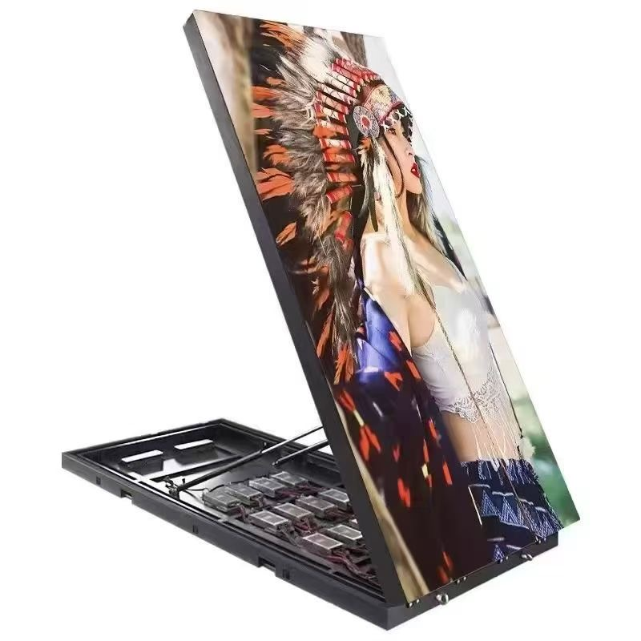

Immersive LED is no longer a novelty reserved for trade shows and music tours. In 2026 it is the default brief for museums, brand experience centres, television studios, and corporate lobbies, where the screen stops being a rectangle on a wall and becomes the room itself. The shift is driven less by one technical breakthrough than by three things arriving at once: the falling cost of fine-pitch cabinets, the maturity of real-time rendering engines, and a generation of clients who judge a space by how it photographs.
The defining characteristic of an immersive installation is that the viewer is surrounded rather than addressed. A conventional video wall assumes a standing audience at a fixed distance. An immersive room assumes people who walk, turn, look up, and sometimes touch. That single change of assumption cascades through pixel pitch, cabinet geometry, structural design, cooling, and content production, and it is why immersive projects tend to fail in the planning stage rather than in the hardware.
Three formats dominate the 2026 market. The first is the wrap-around room, a four- or five-sided box of LED tiles that seals the viewer inside a moving image. The second is the dome or curved volume, where flexible modules form a continuous surface overhead. The third is the extended reality stage, a hybrid of LED volume and camera tracking used for film and broadcast, where the screen must hold absolute colour and timing stability because the camera sees what a human eye would forgive.
What unites the three is that image quality is judged in motion and at close range. Static specifications such as brightness and contrast still matter, but so do refresh rate, scan rate, and grey-scale depth, because any temporal artefact becomes obvious when the audience is standing two metres from the surface. This guide sets out the trends shaping 2026 immersive projects, the trade-offs between formats, and the practical questions buyers should settle before they sign a screen order.
COB packaging has moved from a premium curiosity to the mainstream choice for close-viewing immersive work. In a chip-on-board module the emitters are bonded directly to the board and protected by a matt coating, which removes the visible lamp gap that surface-mount modules show when a viewer stands close. The result is a near-continuous surface with contrast around 10000:1 on our CV-PRO indoor COB line, and far better resistance to the knocks, dust, and cleaning that an interactive room attracts.
Flexible and curved modules solved the geometry problem. Early immersive rooms were built from flat cabinets arranged in a faceted ring, and the audience could see the polygon edges where light fell off. Modern flexible modules bend to a defined radius, so a cylindrical or toroidal volume can be clad in a single continuous skin. The engineering trade-off is that curvature consumes some pixel pitch headroom, because the effective pitch at the outer radius grows, and content must be mapped to the true curved surface rather than a flat proxy.
Real-time engines, not video files, now drive the content. A modern immersive room runs a game engine or a media server fed by tracking data, so the image reacts to where people stand and what they do. This changes the display requirement: the receiving system must accept a high-bandwidth feed at a stable frame rate, and the screen refresh needs to sit comfortably above the sensor rate to avoid beating artefacts. Our indoor panels run at 3840 Hz or higher, which keeps a tracked scene clean on camera and on the eye.
Audio and lighting are no longer separate trades. Immersive rooms are specified as a single sensory system, and the LED surface often carries the diffuse light that once came from luminaires. That means minimum brightness and dimming range matter as much as peak output: a room that must dim to a moody low level without losing grey-scale detail needs a panel with a wide dimming range, not a screen that only performs at maximum.
Serviceability has also become a design input rather than an afterthought. An immersive volume is usually sealed on all sides, so a failed module in the middle of a ceiling surface must still be reachable. Front-service cabinets, magnetic module extraction, and a documented spare-part map are now standard requirements in serious tenders, and suppliers who cannot show a module-level repair procedure tend to lose the bid.
| Format | Typical Pitch | Viewing Model | Best Venue | Content Demand |
|---|---|---|---|---|
| Wrap-around room | P1.2 - P1.9 | Standing and walking, close range | Brand centre, museum | Real-time engine with tracking |
| Dome or curved volume | P1.5 - P2.5 | Seated, looking upward | Planetarium, showroom | Pre-rendered fisheye master |
| XR virtual production stage | P1.9 - P2.6 | Camera plus small crew | Film and broadcast studio | Genlock, colour managed |
| Atrium band | P2.5 - P4 | Passers-by at distance | Corporate lobby, mall | Looping brand films |
| CAVE interactive cube | P1.2 - P1.5 | Inside the volume | Research, training simulation | Interactive simulation engine |
The most expensive mistake is choosing the screen before defining the audience. A pitch that looks stunning in a showroom at three metres is wasted on a dome seen from fifteen metres, and a coarse pitch that suits a distant atrium feels broken in a room where people stand a metre from the wall. Pitch should be derived from the closest realistic viewing distance and the smallest element the content must show, and the format and cabinet geometry should follow from that, not the other way round.
The second recurring error is under-budgeting the content pipeline. An immersive room is not a billboard with a looping advert. It needs a rendered world, a playback system, and someone to maintain both. Clients who buy a spectacular volume and then fund a single launch film end up running the same loop for a year, and the space slowly loses the footfall that justified it. Treat content as a recurring operating cost with a refresh cycle rather than a one-off capital item.
Thermal and acoustic planning is routinely deferred, and both come back to bite. A sealed LED box runs warm, and the cooling strategy affects lifetime, colour stability, and service intervals. Because immersive rooms also tend to run long hours, heat rejection, airflow paths, and derating thresholds belong in the drawings alongside the steel. On the audio side, a hard LED surface reflects almost everything, so acoustic treatment and screen layout must be designed together or the room will sound as harsh as it looks impressive.
Calibration is the last item to be squeezed and the first thing an audience notices. Every cabinet in a wrap-around room must be colour- and brightness-matched at the seams, and the match must be maintained as the panels age. Ask for a documented calibration procedure, a defined colour space, and a scheduled re-calibration interval in the maintenance plan. A room that is perfectly matched on day one and never touched again will show visible banding within a couple of years, and the client will blame the hardware rather than the maintenance plan.
| Decision | Why It Matters | Who Owns It |
|---|---|---|
| Closest viewing distance | Sets the minimum pixel pitch | Design team and client |
| Room geometry and radius | Determines cabinet type and content mapping | Architect with screen vendor |
| Cooling and airflow strategy | Protects lifetime and colour stability | MEP engineer |
| Content engine and tracking | Defines signal chain and refresh needs | Creative studio and AV integrator |
| Calibration and service plan | Keeps seams invisible over time | Screen vendor with operator |
| Spare-part and access map | Makes a sealed volume serviceable | Screen vendor |
| Power and data headroom | Avoids a costly upgrade in three years | Electrical engineer |
Museums and cultural venues remain the most visible adopters. Curators use wrap-around rooms to place visitors inside a historical scene or a scientific simulation, and the format suits story-driven content that would be static and dull on a flat panel. The requirement here is usually colour fidelity and quiet operation, because the room may sit inside a listed building with strict noise and structural limits, and the installation has to disappear into the architecture when it is switched off.
Brand experience centres have become the volume market. Automotive, technology, and luxury retail clients build permanent immersive spaces to launch products and host press, and they judge success by dwell time and social sharing. These projects tend to specify fine pitch for close photography, high refresh for on-camera capture, and a content pipeline that lets a marketing team publish without an engineer standing by.
Virtual production stages are the most technically demanding segment. Here the LED volume is a lighting instrument as much as a display: it must render a credible horizon behind actors while the camera moves, which demands genlock, precise colour management, and above all stability. A flicker or a colour drift that an audience would never notice ruins a take. This niche pulls the rest of the market toward better processing and tighter manufacturing tolerances, and the benefits eventually reach ordinary commercial projects.
Corporate and hospitality spaces are the quiet growth area. Lobbies, boardrooms, and flagship stores increasingly use curved or multi-face LED rather than a single flat wall, because the geometry itself signals investment. These buyers usually want a lower-maintenance, lower-brightness solution, and the sensible specification is often a mid-pitch COB panel with a wide dimming range rather than the finest pitch available.
Looking ahead, the direction of travel is toward interactivity and integration. Rooms that once played a fixed film now sense where people stand and respond, and lighting, audio, and video share one control layer. Buyers planning a 2026 installation should specify for that future: enough processing headroom, a signal path that can accept sensor data, and a service plan that keeps a sealed volume maintainable for its full working life.
Asia Vision Technology manufactures indoor COB and fine-pitch LED for immersive work from our Shenzhen facility, with the CV-PRO line delivering 10000:1 contrast, refresh rates of 3840 Hz and above, and a rated lifetime of 100,000 hours. Panels carry CE, FCC, and RoHS certification, and our pixel pitch range runs from P0.9 to P20 so a project can be specified precisely rather than rounded to whatever a catalogue happens to offer.
For immersive rooms we join the geometry conversation early, sharing cabinet dimensions, curvature limits, and calibration data so that the architect, the AV integrator, and the content studio all work from the same numbers. Orders ship in 15 to 20 working days with a 3-year standard warranty, and we supply the module-level service documentation that a sealed volume needs.

For this requirement our range covers it directly: the RH-PRO fine-pitch COB (flagship, full redundancy) and the COB CV-PRO series (Ultra-HD fine pitch).